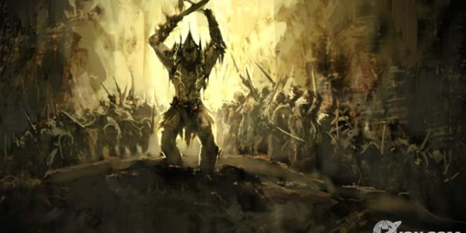

Dajjal & Kaum Ya’juj-Ma’juj

- Selepas Muhammmad Rasulullah shallallahu alaihi wasallam turun dari Mi’raj (naik ke tujuh lapis langit), beliaushallallahu alaihi wasallam diajak kembali oleh Jibril ke Baitul Maqdis di Yerusalem. Seluruh nabi telah menunggu beliau shallallahu alaihi wasallam di sana, untuk salat berjama’ah, dan Rasulullahshallallahu alaihi wasallam menjadi imam mereka semua. Di antara para nabi itu, ada yang Rasulullah shallallahu alaihi wasallam kenal, namun sebagian besar beliau tidak mengenalnya. Setelah salat, Baitul Maqdis menjadi agak riuh dengan pembicaraan di antara para nabi. Mereka semua membahas tema yang sama: tanda-tanda Hari Kiamat akan terjadi. Para nabi menanyakan hal itu ke Ibrahim alaihi salam, namun beliau tidak mengetahuinya. Lalu para nabi menanyakan hal itu ke Musa alaihi salam, namun beliau juga tidak mengetahuinya. Lalu para nabi bertanya ke Isa alaihi salam, dan beliau menuturkan apa yang beliau ketahui dari Allah subhanahu wa ta’ala tentang tanda-tanda Hari Kiamat. Tanda-tanda ini akan muncul, ketika telah dekat masa Hari Kiamat itu. Maka para nabi terdiam dan mendengarkan penuturan Isa alaihi salam itu. Isa alaihi salam menyampaikan bahwa kepastian kapan terjadinya Hari Kiamat itu hanya Allah subhanahu wa ta’ala. Isa alaihi salam menyampaikan bahwa Hari Kiamat akan sangat dekat, ditandai dengan hadirnya Al-Masih Dajjal dan Kaum Ya’juj-Ma’juj. Beliau pun menjelaskan dengan detil kejadian ini. Kedua kejadian akhir zaman ini saat ini menjadi kisah yang menarik nan misterius di kalangan manusia. Kisah-kisah soal Dajjal dan Ya’juj-Ma’juj ini banyak bercampur dengan kisah-kisah israiliyat dan tahayul-tahayul. Padahal Isa alaihi salam menyampaikannya dengan jelas sekali, dan dilanjutkan penyampaiannya ke kita melalui Muhammad shallallahu alaihi wasallam, sang penutup para nabi. Dajjal adalah seorang Yahudi biasa, keturunan Bani Israil, yang salah satu matanya (dari kedua matanya) besar dan mencolok sekali ukurannya. Dajjal memiliki kemampuan yang luar biasa, di antaranya adalah menurunkan hujan dan menumbuhkan tanaman. Dia mampu mempengaruhi orang-orang yang: lemah akalnya, lemah imannya, dan kaum munafik, yang kemudian mereka akan menjadi pasukannya. Dajjal menebarkan fitnah di muka bumi, dan terus berupaya merusak keimanan manusia dengan semua upaya dan pasukannya. Sampai turunlah Nabi Isa alaihi salam ke dunia, dan kekuatannya menjadi lemah. Terjadi peperangan besar (yang disebutkan oleh sebagian orang sebagai: Armageddon atau Perang Akhir Zaman), antara pasukan beriman di bawah pimpinan Al-Mahdi dan Isa alaihi salam, melawan pasukan Dajjal dan kaum kafir. Dajjal dan pasukannya kalan, dan akan terpojok sampai ke Palestina, ke suatu tempat bernama Bab Lud, dan Isa AS membunuh Dajjal di sana. Setelah itu, semua kaum beriman kembali ke negara dan daerah masing-masing, tapi fitnah belum selesai. Tanda akhir zaman berikutnya adalah munculnya Kaum Ya’juj-Ma’juj, sebuah bangsa Asia yang tidak mengenal agama dan sangat haus darah. Pekerjaan mereka hanya menyerbu dan menginvasi ke seluruh dunia, dan berbuat kerusakan di sana. Tidak ada daerah yang mereka lalui, kecuali mereka menghancurkannya. Sumber Tulisan: file:///home/tkj09/Downloads/yMR87l9F.html